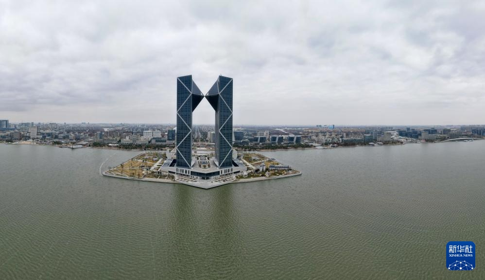
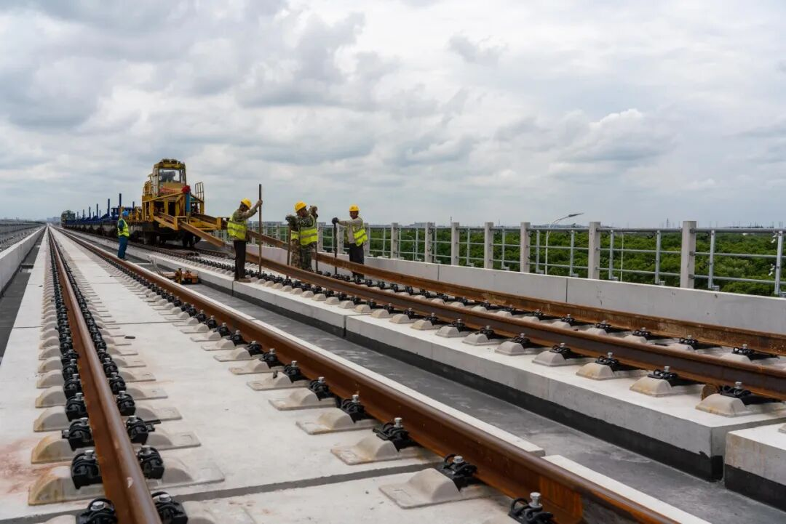
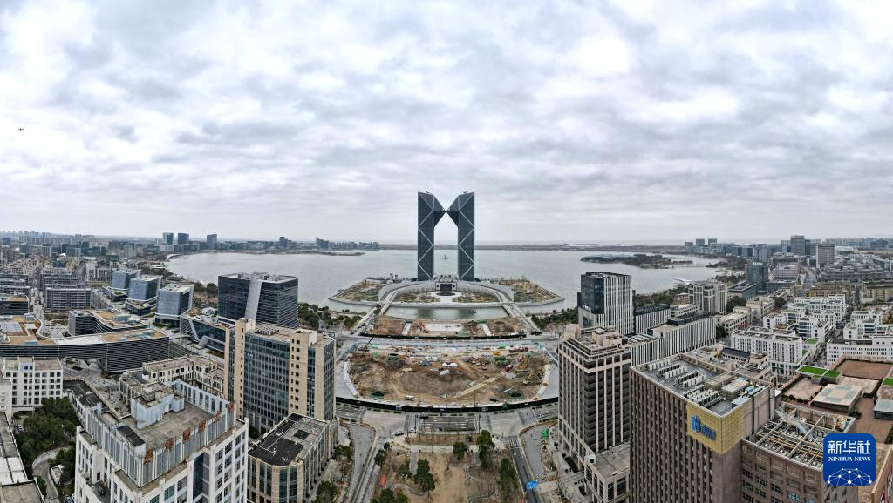

早上六点二十，滴水湖站的站厅里已经有人在啃早饭了。
包子、豆浆、降噪耳机。往龙阳路方向的头班车，六点刚过就发。
对住在临港的人来说，这个点出门不算早。真赶时间的，五点半就得起。
这样的早晨，很多人过了五六年。好消息是，它快到头了。

滴水湖西岛，中银金融中心双子塔。新华社记者 方喆 摄（2026年1月）
市域铁路南汇支线（两港市域铁路）已于今年8月实现全线结构贯通，计划2027年7月建成通车。这是临港新片区继16号线之后，第二条真正意义上“出城”的快速通道。
1
临港人的早晨，是拿分钟算的
先从16号线说起。
滴水湖站的头班车六点整发车。到龙阳路，站站停要六十分钟上下，大站车四十五分钟，直达车三十四分钟——但直达车一天没几班，赶不上就是赶不上。
到了龙阳路还不算完。换2号线、换11号线、换10号线，出站再走十分钟。
有位在长宁古北上班的日本人，把这段路走成了日常：六点半出门，16号线转11号线转10号线，八点一刻到诊所。两个小时，一个来回就是小半天。
还有更远的。媒体写过一位住在临港的摄影师，工作在静安市北高新园区，单程两个半小时以上，来回五个小时。
他自己算了笔账：一年七百多个小时，全花在路上。
在临港，通勤不是一段路，
是一天里最先被切走的那块时间。
所以这几年的临港，说起交通，几乎每个人都有点情绪。
2
8月15日，最后一榀箱梁落位
今年8月15日，南汇支线最后一榀箱梁精准落位。主线段、东支线段，全线结构贯通。
这活儿不轻松。全线一共要预制、架设664榀箱梁，全在高架上，吊装、高处作业，一榀一榀往上放。
再往前推两个月，6月17日，全线长轨铺设收官，累计铺轨39.1公里，焊了382个钢轨接头。

南汇支线高架段铺轨作业。图源：上海发布 / 上海市住房城乡建设管理委
现在的进度是：桥通了，轨铺了，接下来是桥面系、东支线铺轨、接触网、电缆敷设，再往后是联调联试。
8月21日的市政府新闻发布会上，临港方面给了一个明确时间：明年7月，市域线南汇支线建成通车。
这条线，几个数
全长 34.86 公里（主线27.88公里 + 东支线6.98公里）
车站 6 座：浦东3号航站楼、鹏翔路、滨海森林公园、星海湾路、滴水湖北、上海东站
时速 最高 160 公里，大站快车 + 站站停混跑
目标 临港主要节点 15 分钟到浦东枢纽，60 分钟到虹桥
注意最后一行：不是到人民广场十五分钟，是到浦东枢纽十五分钟。这两个地方，差着一条黄浦江。
3
明年7月以后，账要怎么算
先说清楚一件事：南汇支线在临港主城区只设一站——滴水湖北站。
它不在你家楼下，也不在滴水湖地铁站旁边。住环湖一带的人，还得先骑车、坐公交过去。
所以别指望明年7月一到，所有问题自动消失。
但对另一部分人，这条线是实打实的。经常飞浦东机场的、在上海东站换高铁的、去张江和市区西部上班的，一趟车就能省掉一次换乘，省掉一个小时。
配套也在动。16号线要提升运能，争取非高峰时段增开直达车、加密大站车；S2沪芦高速在推进拓宽改造；沪通铁路二期、上海临港枢纽站也在往前推。
临港管委会的说法很直接：现在临港是“交通末梢”，要把它变成“枢纽”。

从滴水湖西岛望向主城区。新华社记者 方喆 摄（2026年1月）
这句话不夸张。一个地方能不能留住年轻人，很多时候不看房价，看早上六点半那班车挤不挤、要坐多久。
八年时间，临港从一片滩涂长成了现在的样子。湖是人工挖的，城是一点点填起来的，路也是一段段修出来的。
还差最后八个月。
你每天早上几点出门？从滴水湖到公司，要花多久？
评论区聊聊你的通勤路线，看看谁才是真正的“临港特种兵”。
资料来源：上海市交通委员会、上海市住房城乡建设管理委、上海市政府新闻发布会（2026年8月21日）、上海发布、新华社。